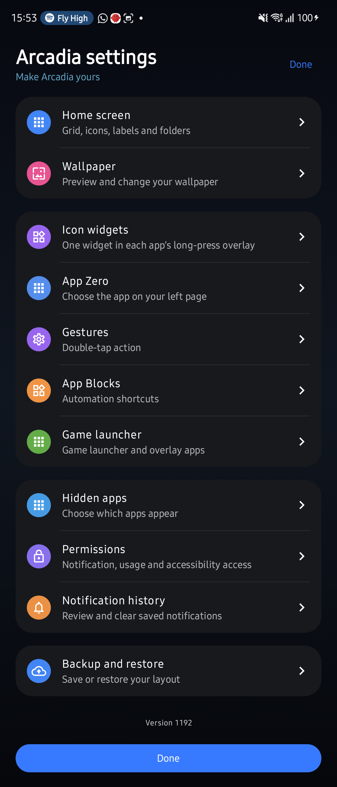
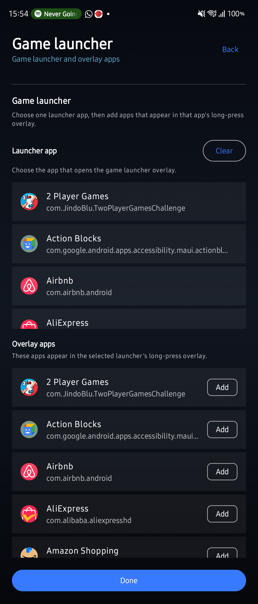
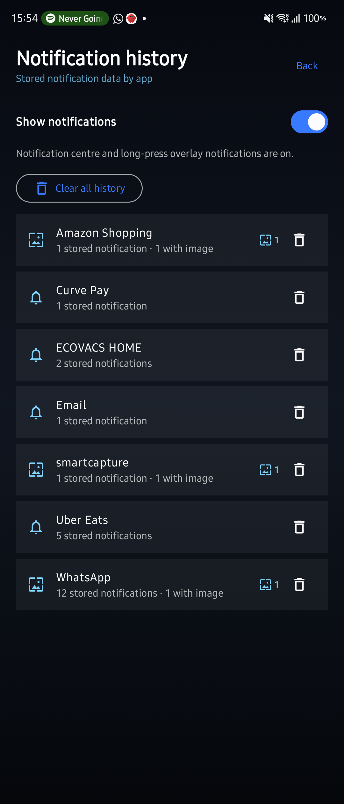
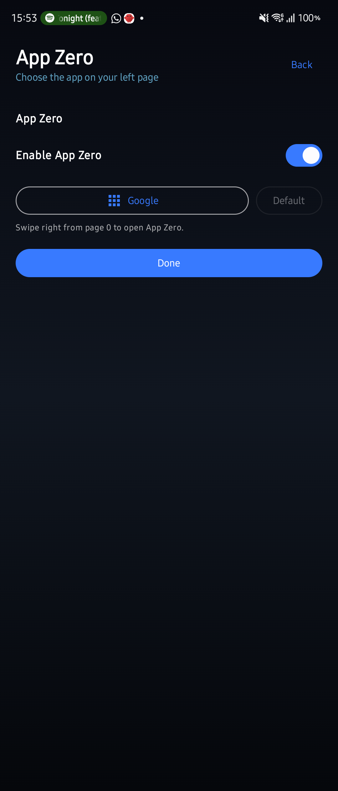
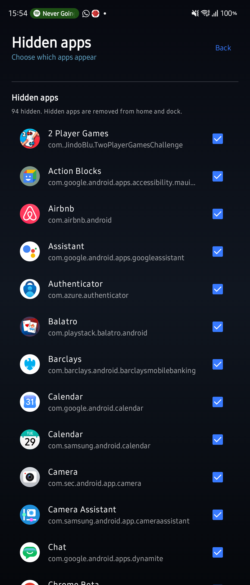
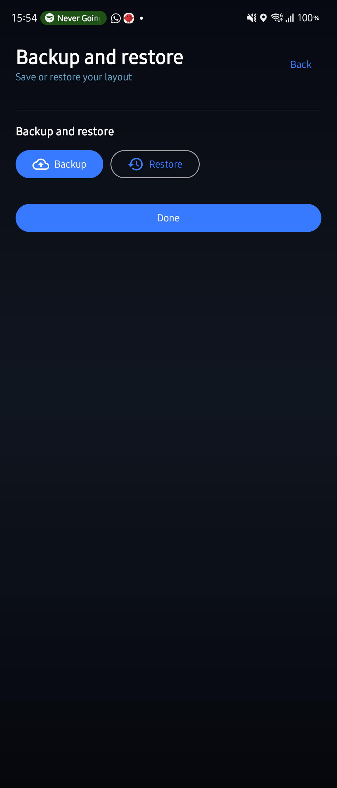

◐
App Zero
One app owns the page to the left of home. Swipe right from page zero and you are straight into it — no drawer, no search.
Home screen launcher
Press and hold any icon and it opens into a panel of its own — the notifications it sent you, the shortcuts it publishes, and one of its widgets running live. You get what you came for without the app ever opening.
The panel
Most launchers answer a long press with a short menu of shortcuts. Arcadia answers with the app itself — and holds it open until you lift your finger.

Live ones and the ones you already swiped away, kept per app and scrollable inside the panel.
Whatever the app offers — a scene, a chat, a search — reachable without loading the app first.
Pick a widget per app and it runs inside the panel, updating as it would on the home screen.
App Blocks
Name your smart-home routines once and Arcadia hangs them off the app's icon. Turning everything off on your way out is a press and a tap, not four taps and a loading screen.

Widgets

Give an app a widget and it lives in that app's panel instead of taking a slot on your home screen. The calendar stays with the calendar, the player stays with the player, and your grid stays yours.
Control
One app owns the page to the left of home. Swipe right from page zero and you are straight into it — no drawer, no search.
Nominate a launcher app, then choose which games appear inside its panel. Your library lives under one icon instead of across three pages.
Ninety-four apps hidden on the phone these shots came from. Gone from home, dock and search, still installed and still working.
Stored per app, with the images they arrived with, long after the shade has been cleared. Clear one app or all of them.
Your layout — pages, folders, widgets, the lot — saved to a file you keep. New phone, same home screen.
Cover screen and inner screen keep their own layouts, so opening the phone does not rearrange your home screen.
A look around






Privacy
Arcadia never asks for network access, so the operating system refuses every outbound connection it could attempt. Your notifications, your layout and your location stay on the phone because there is no route off it.
Everything Arcadia stores goes when you uninstall it. Read the policy.